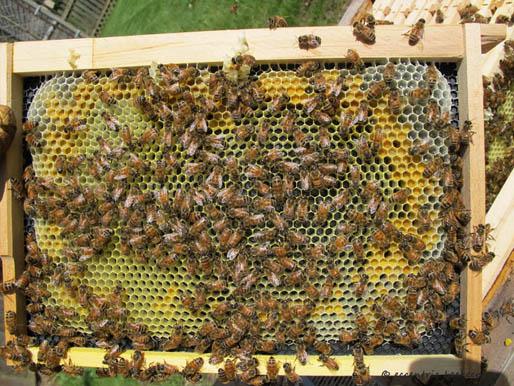
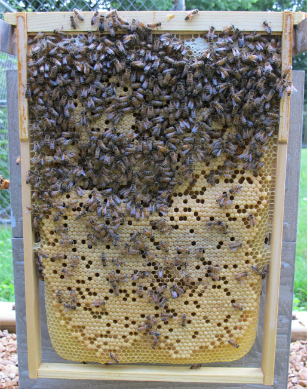
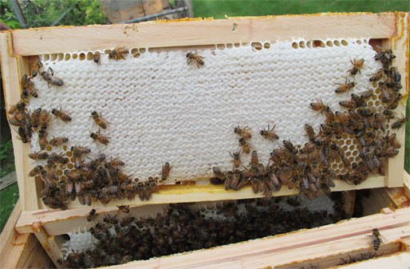

Box Hive Project
"In beekeeping, as in most endeavors, there are many ways to accomplish the same tasks and many interpretations of the same facts or data, just as many roads lead to the same destination, although it is equally true that different individuals following the same road can arrive at different destinations."
― William Longgood, The Queen Must Die, And Other Affairs of Bees and Man
The project's hive-body boxes and ventilated gabled style roof are of Warré design. The alighting niche, flight hole and bottom spacing shim are copied from a drawing found in Bienenzucht: Naturgerecht einfach und erfolgsicher (1946), by Johann Thür.
The specially sized Hoffman style self-spacing frames permit the removal of combs for colony inspection and mite monitoring. A selection of different purpose frames are available for use in the project hive. These include single box foundationless frames, single box 4.9 mm cell size plastic foundation frames, shallow super foundationless frames and extended double deep foundationless frames.

All aspects of beekeeping are influenced by the local climate. The following chart plots the average and record temperature data for the Midest USA 40°N location.

Features
Floor: Flat solid bottom, 60 mm space between floor and hive-body box
Entrance: Alighting niche, H 15 x W 120 mm flight hole
Hive-Body Box: W 30 x W 30 x H 21 cm internal dimensions, 19 liter
Shallow Super: W 32 x W 32 x H 15 cm internal dimensions, 15 liter
Hive Volume: 53 liter, configured with two hive-body boxes and one shallow super
Comb Support: Eight Hoffman style self-spacing frames
Comb Spacing: 34 mm on-center spacing
Comb Height Options: 200 mm brood nest, 410 mm double deep brood nest, 138 mm shallow super
Inner Cover: Woven polypropylene
Roof: Gabled roof with ventilated cavity
Management: Supered
Harvest: Raw, cut comb and strained
Update March 2014 - Following a harsh winter of record cold, record snowfall and high winds the colony is extremely active on warm sunny days. Temperatures as cold as -26° C (-16° F), 130 cm (51 inches) of snow and wind chills of -45° C (-49° F) proved to be an extreme test of the box hive project's winter configuration.
Update January 2014 - The southward movements of the polar vortex in the Northern Hemisphere resulted in a month of record cold, record snowfall and high winds. Temperatures as cold as -26° C, 76 cm of snow and wind chills of -45° C should prove to be an extreme test of the modified Warré winter configuration in a Midwest USA location. I doubt Warré had these conditions in mind for his Ruche Populaire.
Update July 2013 - In April 2013 the colony was started on 4.9 mm black plastic foundation in 200 mm deep frames. After the plastic foundation was 80% drawn 200 mm deep foundationless frames were added above the colony. Once all the foundationless frames were nearly drawn 410 mm double deep foundationless frames were added beneath the colony. Cell size measurements of the drawn comb in the 410 mm double deep foundationless frames are 4.7 mm to 5.0 mm with an average 4.8 mm. The hive is supered with 138 mm deep foundationless frames.
On 18 July 2013 the colony occupies four hive boxes and is storing honey in a fifth (shallow super) box.






This site is licensed under a Creative Commons
Attribution-NonCommercial-ShareAlike 3.0 Unported License.
Updated 28 March 2014 | eccentric beekeeper